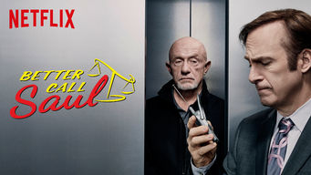
Better Call Saul
Séries, Séries dos EUA, Séries Cômicas, Séries Dramáticas,
Elenco:
Bob Odenkirk, Jonathan Banks, Michael McKean, Rhea Seehorn,
Jimmy era um advogado qualquer até a vida o transformar em Saul, o cara que coloca criminosos dentro da lei.
Elenco:
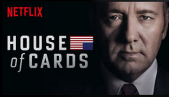
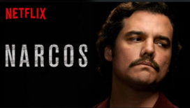
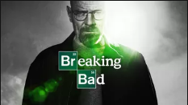
Breaking Bad
Séries, Séries dos EUA, Séries Dramáticas, Dramas para TV sobre crimes,
Elenco:
Bryan Cranston, Aaron Paul, Anna Gunn, Dean Norris,
À beira da morte, um professor passa a fabricar metanfetamina pelo futuro da família, mudando o destino de todos.
Elenco:
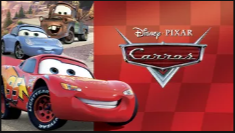
House of Cards
Séries, Séries dos EUA, Séries Dramáticas,
Elenco:
Kevin Spacey, Robin Wright, Kate Mara, Corey Stoll, Michael Kelly,
É verdade que o poder corrompe? O congressista Frank Underwood está pronto para descobrir.
Elenco:
Narcos
Séries, Séries dos EUA, TV policial violenta,
Elenco:
Wagner Moura, Boyd Holbrook, Pedro Pascal, Joanna Christie,
Primeiro, a mercadoria. Segundo, as rotas. Quando o dinheiro corre solto, a próxima parada é o poder.
Elenco:
Carros
Filmes para a família e crianças, Filme para 2 e 4 anos,
Elenco:
Owen Wilson, Larry the Cable Guy, Michael Caine,
Um carro de corrida aprende que a vida é mais do que fama e glória. E você achava que o seu carro tinha personalidade!
Elenco:
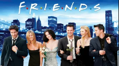
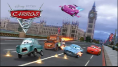
Carros 2
Filmes para a família e crianças, Filme para 2 e 4 anos,
Elenco:
Owen Wilson, Larry the Cable Guy, Michael Caine,
A caminho da Europa para participar do Grand Prix Mundial, o carro de corridas Relâmpago McQueen se envolve em divertidas e misteriosas intrigas internacionais.
Elenco:
Uma Família da Pesada
Séries, Séries dos EUA, Séries cômicas,
Elenco:
Seth MacFarlane, Alex Borstein,
Nesta série animada sem escrúpulos de Seth MacFarlane, o cômico Peter Griffin e sua família problemática passam por desventuras tresloucadas.
Elenco:
Valente
Filmes para a família e crianças, Filmes para 4 a 7 anos,
Elenco:
Kelly Macdonald, Billy Connolly, Emma Thompson,
Após enfurecer três lordes poderosos e ter um pedido impensado atendido, uma indomável princesa escocesa começa sua jornada para reparar os estragos que causou.
Elenco:
Friends
Séries, Séries dos EUA, Séries cômicas, sitcoms,
Elenco:
Jennifer Aniston, Courteney Cox, Lisa Kudrow, Matt LeBlanc, Matthew Perry, David Schwimmer,
Esta série de enorme sucesso acompanha as aventuras de seis amigos que enfrentam as armadilhas da vida, do trabalho e do amor nos anos 1990.
Elenco:
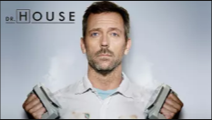
House
Séries, Séries dos EUA, Séries dramáticas,
Elenco:
Hugh Laurie, Omar Epps, Robert Sean Leonard,
Hugh Laurie é o mal-humorado Dr. Gregory House, um médico que odeia seus pacientes mas que é um gênio ao tratar doenças misteriosas.
Elenco:
Mãos talentosas
Dramas, Dramas biográficos, Dramas baseados em fatos reais,
Elenco:
Seth MacFarlane, Alex Borstein,
Cuba Gooding Jr. é um cirurgião pediátrico que supera grandes obstáculos para estudar medicina e salvar vidas no Hospital Johns Hopkins.
Elenco:
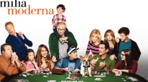
Família Moderna
Séries, Séries dos EUA, Séries cômicas,
Elenco:
Ed O'Neill, Sofia Vergara, Julie Bowen,
Esta série vencedora do Emmy acompanha a vida de Jay Pritchett e sua eclética família enquanto lidam com os desafios da vida contemporânea em Los Angeles.
Elenco:
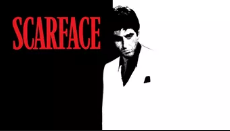
Scarface
Ação e aventura, Suspenses de ação, Clássicos de ação e aventura,
Elenco:
Al Pacino, Steven Bauer, Michelle Pfeiffer,
Um chefão do tráfico da Flórida comete o erro fatal de "abusar do seu próprio suprimento", nesta refilmagem do diretor Brian de Palma do original de 1932.
Elenco:
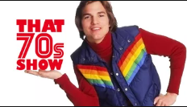
That '70s show
Séries, Séries dos EUA, Séries cômicas,
Elenco:
Topher Grace, Mila Kunis, Ashton Kutcher, Danny Masterson, Laura Prepon, Wilmer Valderrama, Debra Jo Rupp, Kurtwood Smith, Don Stark, Tanya Roberts,
Jovens
Elenco:
Zumbilândia
Comédias, Comédias obscuras,
Elenco:
Jesse Eisenberg, Woody Harrelson, Emma Stone,
Tentando sobreviver em um mundo dominado por zumbis, um universitário se une a um desordeiro e duas irmãs golpistas.
Elenco: